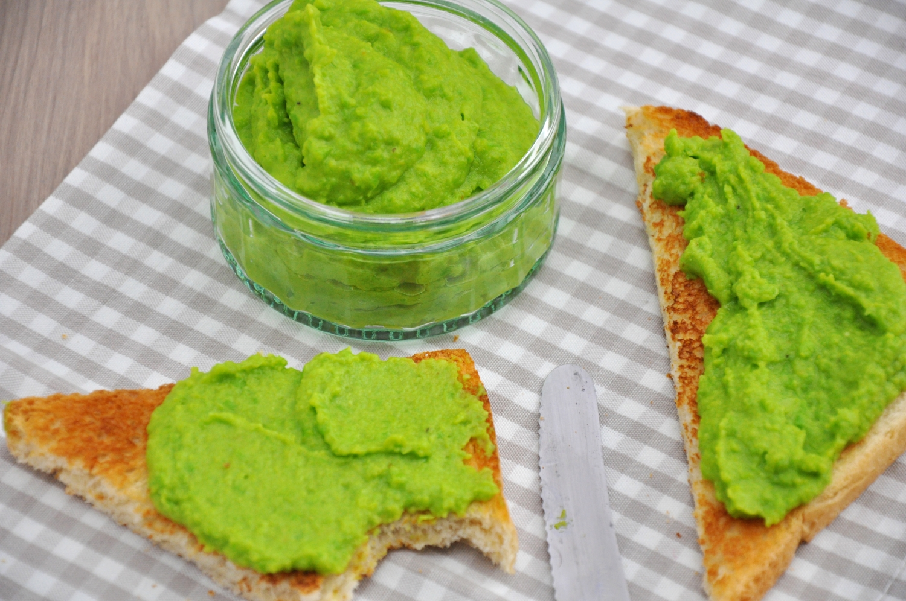

Ingrediente:
- 300 g mazare fina
- 50 ml ulei de masline
- 1 catel usturoi
- 1/2 lingurita sos pesto
- sare
- piper
Piure de mazare

- Opareste mazarea in apa cu sare, pana cand mazarea se ridica la suprafata, apoi strecoar-o.
- Combina mazarea, in blender, cu usturoiul tocat cat mai marunt, uleiul de masline adaugat treptat, sosul pesto, sarea si piperul.
- Intr-un bol amestecati ouale, laptele, uleiul si esenta de vanilie. Adaugati peste faina si bateti la o viteza medie pentru 3 minute.
Adaugati apa fiarta si amestecati usor pana se combina.
- Serveste piureul de mazare cald sau rece, cu o garnitura de carne sau simplu, pe o felie de paine prajita, in cazul in care tii post.
Ingrediente:
- 7-8 buc ardei gras
- 500 g ciuperci
- 100 g orez
- 1 ceapa mare
- 2 catei usturoi
- 1 morcov mare
- 2 linguri ulei de masline
- 1 legatura patrunjel
- 100 ml piure de rosii
- sare
- piper
Ardei umpluti de post
- Pregateste ardeii pentru umplut: Taie “capace” fiecarui ardei si curata de seminte partea inferioara, folosind o lingurita.
- Intr-o tigaie incinge uleiul si caleste ceapa taiata cat mai marunt, impreuna cu usturoiul maruntit.
- Cand ceapa devine translucida, adauga ciupercile taiate cubulete si amesteca continuu, pana ce ciupercile isi schimba culoarea integral.
- Adauga peste 2-3 linguri din piureul de rosii si restul ingredientelor: orezul spalat, morcovul dat pe razatoarea mica, patrunjelul tocat marunt, sarea si piperul.
- Umple ardeii cu aceasta compozitie obtinuta si asaza-i intr-o tava termorezistenta.
- Pe langa ei, toarna apa combinata cu restul de sos de rosii, pana la jumatatea inaltimii lor.
- Da tava cu ardei umpluti de post la cuptor pentru 70-80 de minute, la 160 de grade, sau pana cand ardeii sunt rumeniti
- Intoarce-i la jumatatea timpului de coacere si serveste ardeii umpluti de post alaturi de mamaliguta si putin marar presarat deasupra.
Ingrediente:
- 300 g cuscus
- o conserva mica naut fiert
- 2 ardei grasi de culori diferite
- 2 linguri seminte de floarea-soarelui
- 2 linguri stafide aurii
- 2-3 frunze salata
- sucul unei jumatati de lamaie
- 1-2 linguri ulei
- sare
Salata de cuscus
- Se fierbe apa si se toarna peste cuscus conform indicatiilor de pe pachet. Se acopera si se lasa sa se umfle.
- Nautul se trece sub un jet de apa rece, se scurge bine si se pune intr-un bol tapetat cu foi de salata. Se taie ardeii fasii si se adauga, apoi se presara semintele si stafidele.
- Se desface cuscusul cu furculita si apoi se adauga peste restul ingredientelor, se presara sare, se toarna sucul de lamaie si uleiul, se amesteca si se serveste.